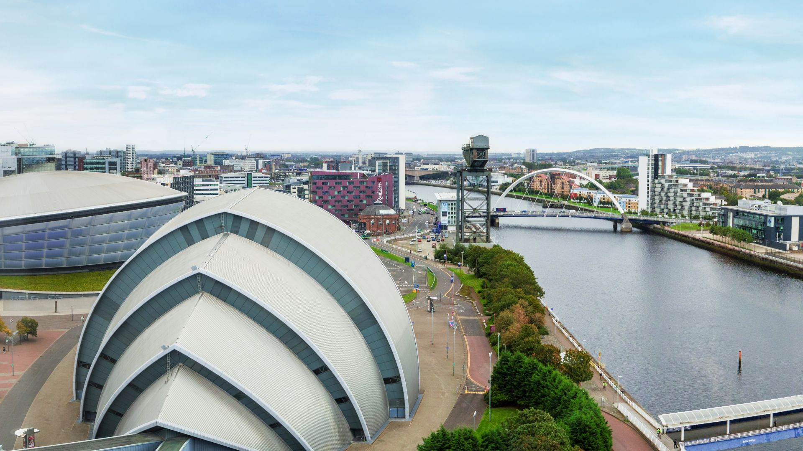

Bridging Theory & Practice
Ethics & Innovation Forum
Glasgow, UK · 12–16 July 2026 · Scottish Event Campus (SEC)

Free Public Event
Where Science Meets Society
Opening event featuring Nobel laureate Prof. Ardem Patapoutian

Part of SynSci26
Interdisciplinary Dialogue
Connecting researchers, citizens, and policymakers across disciplines

@Scottish Event Campus
Dates & Venue
SEC Armadillo & SEC Centre with selected University venues

Glasgow & Nijmegen
Joint Initiative
University of Glasgow & Radboud University collaboration